Introduction to Ag Informatics
Module 6, Lecture 1Joe Dvorak, joe.dvorak@uky.edu
Fall 2021
Outline for Today
- Why do we care about using geometric or spatial data?
- How do computers represent geometry?
- What are common libraries for handling geometric data?
Why?
We live in a multidimensional world!
Designs that address some of humanity's most critical problems require handling 2D and 3D information.
- Supply Chain Logistics
- Improvements of the Natural Environment
- Robotics and automation
Less critcal, but still valuable systems require 2D and 3D data as well.
- Mapping, Location Tracking
- Games and virtual worlds
Logistics
Routing
How do we get from point A to point B?
We have to know the locations!
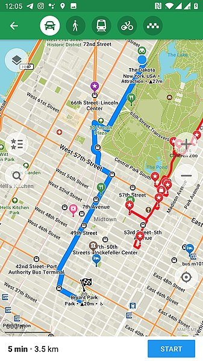Eugene Lisovskiy, CC BY-SA 4.0, via Wikimedia Commons
{kind=link}
Logistics
Storage
Where do we put things?
Precision Agriculture and Environmental Monitoring
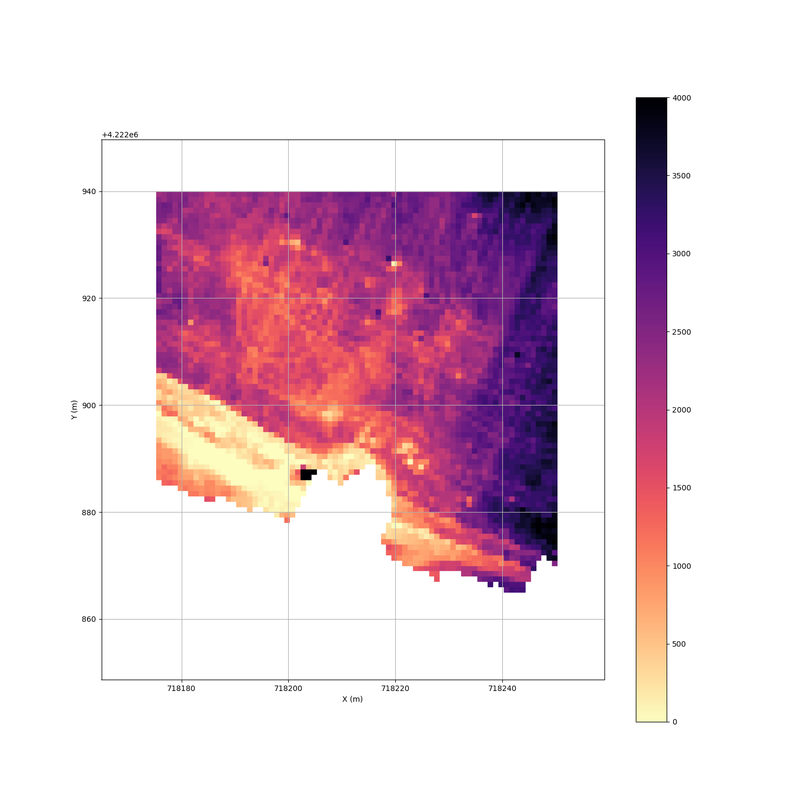Robotics
Autonomous Motion Control Requires knowing where everything is.
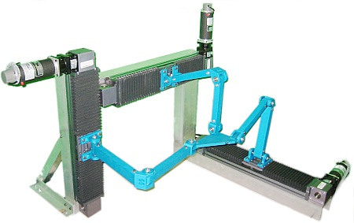Automated and Autonomous Vehicles
We have to know the locations of obstacles and plan a path through them.
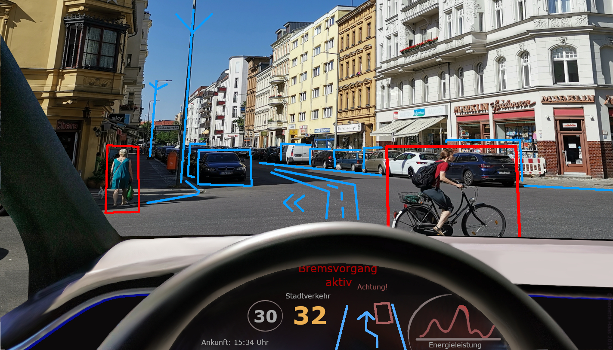Drivasvalencia, CC BY 4.0, via wikispeedia.org
Computing
To operate in all of these applications, computers must process geometric data.
This requires models that represent the real world.
These models must capture the rules of geometry.
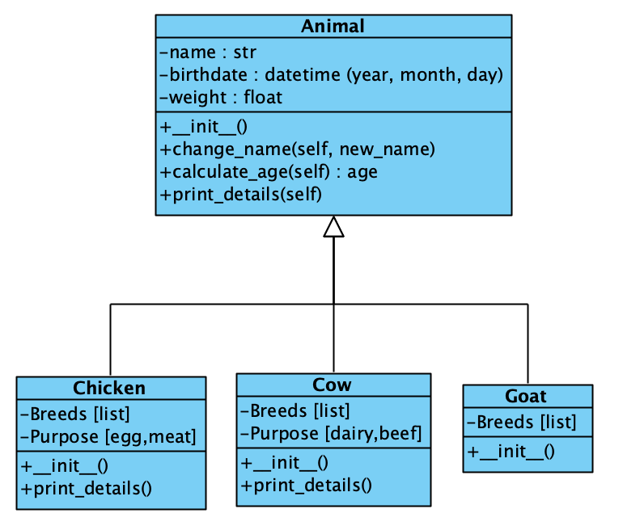All models are approximations and not necessarily perfect!
Challenges of Computing - Example
Consider the image below
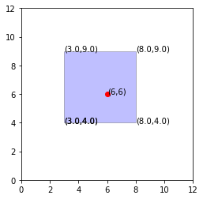Is the point inside or outside the box?
How long did it take to figure that out?
Challenges of Computing - Example
Try to think of a rule you could use to check if the point is inside or outside the box.
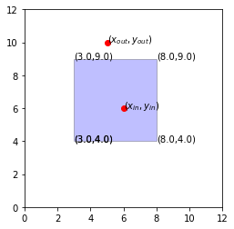Take 5 minutes and try to figure out a rule, programming or math that could be used.
Challenges of Computing - Example
Let's check with a different square
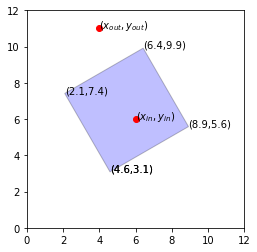Do your rules still work?
Take 5 minutes to double check your rule or come up with new ones.
Challenges of Computing - Example
How about a shape that we might see in the real world?
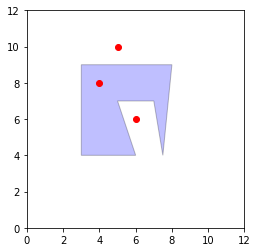Do your rules still work?
Take 5 minutes and see if you can come up with a set of rules for this case.
Challenges of Computing
We are JUST trying to figure out if a point is inside or outside a boundary.
Why is this so difficult? We do can it easily with our eyes.
Geometry gets complex when we want to work with very precise rules like programming and math. Fortunately, people have created libraries and models that help us with this.
Aren't you glad we can use them?!
Challenges of Computing
Other difficult procedures:
- Area for complex shapes
- Splitting shapes
- Combining shapes
- Determing distances between complex shapes
- Calculating overlapping regions
The models we use for geometry
Geometric Objects

There are other objects to implement if you want true curves
Many geometric operations can be approximated with straight lines and polygons so curves are not always supported.
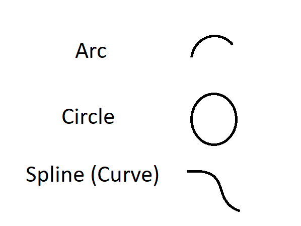Collections
Some applications want to work with groups of geometric objects
Examples
- Point Cloud
- Lines (Ex: Field Paths)
- Polygons (Ex: Sets of Fields)

Going to 3D
Points are 0D.
Lines are 1D, and polygons are 2D.
Polyhedrons and Spheres are 3D.
Image created by Robert Webb's Stella Software
{kind=link}
We will focus on 2D in this class.
A note about Points
Two common methods to describe a location
- Cartesian (x-y plane)
- Latitude, Longitude (on a planet)
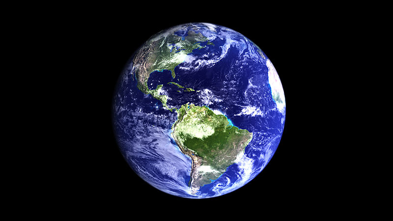
Not equivalent!
Kevin Gill from Nashua, NH, United States, CC BY-SA 2.0, via Wikimedia Commons
.jpg){kind=link}
Change in Distance
Prudhoe Bay, Alaska
70°19'31.8"N, 148°42'41.0"W
+1 degree latitude: 112 km
(111 km North, 2.6 km West)
+1 degree longitude: 37.8 km
(570 m North, 37.8 km East)
Honolulu, Hawaii
21°18'25.0"N, 157°51'30"W
+1 degree latitude: 111 km
(111 km North, 820 m East)
+1 degree longitude: 104 km
(104 km North, 1.1 km East)
Use Libraries!
Shapely and PyProj for Coordinate Transforms
To transform into Cartesian Coordinates
- WGS84 (GPS or Lat/Long Coordinates): EPSG:4326
- UTM Zone: 16N for Indiana, Central and Western Kentucky: EPSG:32616
Gotcha: Sometimes latitude bands are lettered. Kentucky and Southern Indiana are in band S, and Northern Indiana is in band T. The "N" in 16N from EPSG:32616 is for North, instead!
Shapely Example
Break this field into tractor passes

Blue line represents your desired first pass.
Paths on a Field with Shapely


Homework
We will work with Shapely this week! To be released after class.
- The quiz for module 6 will be posted soon.
Questions?
License
- Attribution Recommendation: Introduction to Agricultural Informatics Course", Joe Dvorak, University of Kentucky. Available at https://github.com/ag-informatics/ag-informatics-course. Licensed by CC BY-NC-SA 4.0.

This course is licensed under a Creative Commons Attribution-NonCommercial-ShareAlike 4.0 International (CC BY-NC-SA 4.0) license. This is a human-readable summary of (and not a substitute for) the license. Official translations of this license are available in other languages.
You are free to:
- Share — copy and redistribute the material in any medium or format
- Adapt — remix, transform, and build upon the material
Under the following terms:
- Attribution — You must give appropriate credit, provide a link to the license, and indicate if changes were made. You may do so in any reasonable manner, but not in any way that suggests the licensor endorses you or your use.
- NonCommercial — You may not use the material for commercial purposes.
- ShareAlike — If you remix, transform, or build upon the material, you must distribute your contributions under the same license as the original.
- No additional restrictions — You may not apply legal terms or technological measures that legally restrict others from doing anything the license permits.